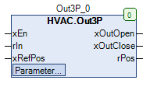

Out3P (FB)¶
FUNCTION_BLOCK Out3P
Kurzbeschreibung¶
Umwandlung eines Analogwertes ( z.B. P-Regler ) in Ausgangssignale für einen 3-Punkt-Antrieb (Pulsweitenmodulation).Zusätzlich kann eine Referenzposition ( Endschalter ) des Antriebs erfasst werden.
Darstellung¶

Schnittstellen¶
Eingänge¶
Name Datentyp Wertebereich Initialwert Funktion xEn BOOL Freigabe des Funktionsbausteins rIn REAL Eingangssignal xRefPos BOOL Digitaleingang zur Erfassung der Referenzposition ( Endschalter )
Ausgänge¶
Name Datentyp Wertebereich Initialwert Funktion xOutOpen BOOL Ausgangsvariable Plus/Mehr für den Antrieb xOutClose BOOL Ausgangsvariable Minus/Weniger für den Antrieb rPos REAL 0.0 ... 100.0 Analogsignal für die aktuelle Position
Sollwerte / Parameter¶
Name Datentyp Wertebereich Initialwert Funktion iRefPosition INT 0 - 100 0% Referenzposition des Antriebs tImpulsClose TIME 1s Zeitdauer eines Impulses am Ausgang Minus/Weniger tImpulsOpen TIME 1s Zeitdauer eines Impulses am Ausgang Plus/Mehr rMinLimit REAL -100.0 Integralwert für die Impulsauslösung am Ausgang Minus/Weniger rMaxLimit REAL 100.0 Integralwert für die Impulsauslösung am Ausgang Plus/Mehr rDuration TIME 120s Laufzeit des Antriebs tIntegration TIME 100ms Zeitdauer zwischen zwei Integrationsvorgängen
Funktionsbeschreibung¶
Allgemeines¶
Dieser Funktionsbaustein dient zur Umwandlung eines analogen Eingangssignals rIn in die zugehörigen Ausgangssignale xOutOpen und xOutClose in Form einer Pulsweitenmodulation.
Die Impulslänge ist dabei stets konstant ( tImpulsClose bzw. tImpulsOpen ) während die Pause zwischen zwei Impulsen unterschiedlich groß ist.
Bei einem aktuellen Eingangssignal rIn von 0.0 werden keine Ausgangsimpulse erzugt.
Befindet sich das aktuelle Eingangssignal im positiven Bereich ( 0.0 - +100.0 ) so werden nur am Ausgang xOutOpen Impulse erzeugt.
Befindet sich das aktuelle Eingangssignal im negativen Bereich ( 0.0 - -100.0 ) so werden nur am Ausgang xOutClose Impulse erzeugt.
Die Freigabe/Sperrung des Funktionsbausteins erfolgt über den Digitaleingang xEn.
Jede ansteigende Flanke am Digitaleingang xRefPos ( d.h. der Antrieb befindet sich aktuell in seiner Referenzposition) bewirkt eine Neufestlegung des analogen Ausgangssignales rPos auf den Sollwert / Parameter iRefPosition.
Freigabeeingang xEn¶
Bei nicht aktivem Freigabeeingang ( xEn = FALSE ) werden beide Ausgänge xOutOpen und xOutClose zurück gesetzt. zusätzlich wird das Integral auf 0 gesetzt und das Digitalsignal zur Erfassung der Referenzposition xRefPos ist ohne Funktion.
Mit jeder abfallenden Flanke am Freigabeeingang wird das Ausgangssignal xOutClose während einer Zeitdauer von rDuration + 10s dauerhaft aktiviert und gleichzeitig das Ausgangssignal xOutOpen deaktiviert ( = Zwangsbewegung des Antriebs in Ruhelage ).
Referenzposition¶
Der Digitaleingang xRefPos erlaubt eine Neujustierung der Positionsanzeige rPos auf einen vordefinierten Wert iRefPosition ( 0% = Ruhelage - 100% = Maximalposition ).
Jede ansteigende Flanke am Digitaleingang löst eine Neujustierung aus.
Signalerzeugung¶
Das analoge Eingangssignal rIn ( Regelabweichung eines Regelprozesses, Signal zum Nullpunkt symmetrisch ) wird im Intervall tIntegration über die Zeit integriert.
D.h. nach jedem Integrationsintervall tIntegration wird das Produkt aus rIn und dem tIntegration gebildet und zum aktuellen Inhalt des Integrationsspeichers addiert. Es entsteht daher eine Treppenfunktion.
Beispiel
rIn = 100K, tIntegration = 100ms, alter Wert des Integrationsspeichers = 500Ks, neuer Wert ( nach 100ms) = 510Ks.
Übersteigt der Integrationswert den Grenzwert rMaxLimit, so wird am Ausgangssignal xOutOpen ein Impuls der Länge tImpulsOpen erzeugt.
Unterschreitet der Integrationswert den Grenzwert rMinLimit, so wird am Ausgangssignal xOutClose ein Impuls der Länge tImpulsClose erzeugt.
Nach jeder Impulserzeugung wird der Integrationswert auf 0 zurück gesetzt.
Der Grenzwert rMaxLimit darf nur Werte > 0.0, der Grenzwert rMinLimit darf nur Werte < 0.0 annehmen.
Beispiele mit unterschiedlichen Parametern
tIntegration = 100ms, rMaxLimit = 100.0, rMinLimit = -100.0: Es wird bei einem Eingangssignal rIn in Höhe von +5.0 am Ausgang xOutOpen alle 4s ein Impuls mit der Länge 1s erzeugt.
tIntegration = 100ms, rMaxLimit = 100.0, rMinLimit = -100.0: Es wird bei einem Eingangssignal rIn in Höhe von -5.0 am Ausgang xOutClose alle 4s ein Impuls mit der Länge 1s erzeugt.
tIntegration = 200ms, rMaxLimit = 100.0, rMinLimit = -100.0: Es wird bei einem Eingangssignal rIn in Höhe von +5.0 am Ausgang xOutOpen alle 2s ein Impuls mit der Länge 1s erzeugt.
tIntegration = 200ms, rMaxLimit = 100.0, rMinLimit = -100.0: Es wird bei einem Eingangssignal rIn in Höhe von -5.0 am Ausgang xOutClose alle 2s ein Impuls mit der Länge 1s erzeugt.
tIntegration = 100ms, rMaxLimit = 200.0, rMinLimit = -100.0: Es wird bei einem Eingangssignal rIn in Höhe von +5.0 am Ausgang xOutOpen alle 8s ein Impuls mit der Länge 1s erzeugt.
tIntegration = 100ms, rMaxLimit = 200.0, rMinLimit = -100.0: Es wird bei einem Eingangssignal rIn in Höhe von -5.0 am Ausgang xOutClose alle 8s ein Impuls mit der Länge 1s erzeugt.
Positionsanzeige rPos¶
Sie dient zur Anzeige der aktuellen Position des 3-Punkt-Antriebes im Bereich 0 - 100% und wird intern berechnet ( 0% = Ruhelage, 100% = Maximalposition ).
Zur Vermeidung von Abweichungen zwischen der errechneten und der tatsächlichen Position wird die regelmäßige Auslösung der Neujustierung der Positionsanzeige empfohlen.
Die Positionsanzeige ist unabhängig von der Signalerzeugung, d.h. erreicht die Positionsanzeige eine Endposition ( 0% oder 100% ), so werden trotzdem weiterhin Signale an den Ausgängen
xOutOpen bzw. xOutClose erzeugt.
Visualisierung¶
Codesys¶
- InOut:
Scope Name Type Initial Comment Input xEn BOOL Freigabe des Funktionsbausteins rIn REAL Eingangssignal xRefPos BOOL Digitalsignal zur Erfassung der Referenzposition ( Endschalter ) iRefPosition INT 0 Referenzposition des Antriebs tImpulsClose TIME TIME#1s0ms Zeitdauer eines Impulses am Ausgang Minus/Weniger tImpulsOpen TIME TIME#1s0ms Zeitdauer eines Impulses am Ausgang Plus/Mehr rMinLimit REAL -100.0 Integralwert für die Impulsauslösung am Ausgang Minus/Weniger rMaxLimit REAL 100.0 Integralwert für die Impulsauslösung am Ausgang Plus/Mehr tDuration TIME TIME#2m0s0ms Laufzeit des Antriebs tIntegration TIME TIME#100ms Zeitdauer zwischen zwei Integrationsvorgängen Output xOutOpen BOOL Ausgangsvariable Plus/Mehr für den Antrieb xOutClose BOOL Ausgangsvariable Minus/Weniger für den Antrieb rPos REAL Analogsignal für die aktuelle Position